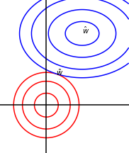
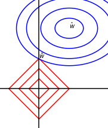
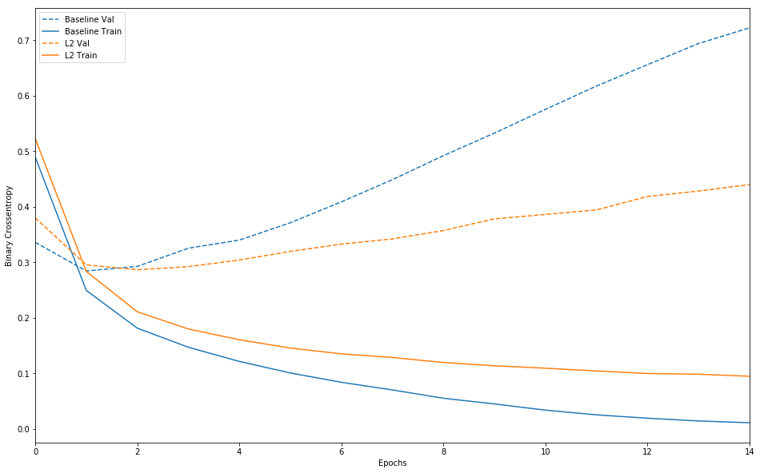
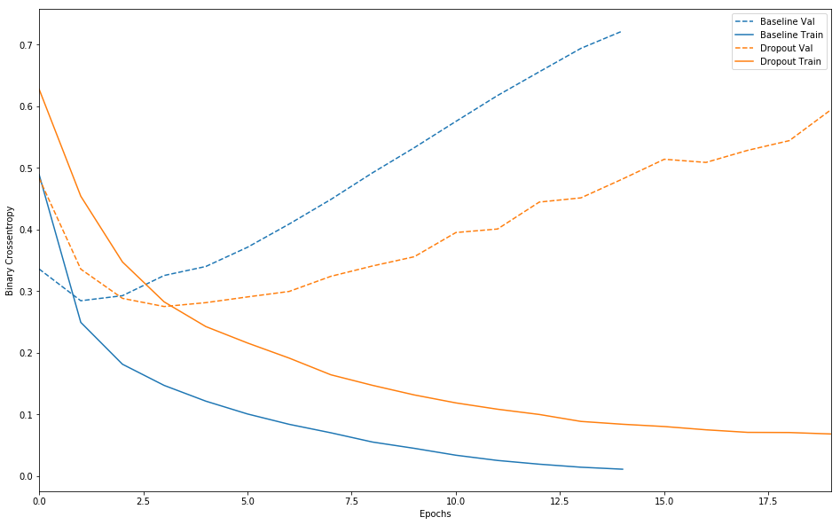

0 概述
机器学习的中心问题是在训练集上训练出一个能够在新的输入数据上表现良好的模型。现有的很多策略是在牺牲训练误差来减小泛化误差，这些策略被统称为正则化。
和传统的机器学习算法一样，神经网络的范数正则化方法也是通过限制模型参数来减少过拟合的。但是神经网络的范数正则化也有自己的特点，为了论述方便本文将神经网络的参数分为两类：
- $\boldsymbol w$ ：仿射变换权重参数，模型向量两层神经元的相互作用的参数，不包含偏执(bias)；
- $\boldsymbol \beta$ ：偏执参数；
- $\boldsymbol \theta$ ：包含仿射变换权重参数$w$和偏执参数(bias)。
在深度学习中，正则化只针对仿射变换权重参数$\boldsymbol w$，而每一层的偏执参数不做正则化处理。这是因为：
- 每个偏置仅控制一个单变量(权重参数控制两个变量)，这意味着，我们不对其进行正则化也不会导致太大的偏差
- 偏置参数的正则化可能会导致明显的欠拟合。
正则化之前的目标函数记为 $J(\boldsymbol \theta, \boldsymbol X, y)$ ，正则化后的目标函数记为$\tilde J(\boldsymbol \theta, \boldsymbol X, y)$ ，则:
$$
\tilde{J}(\boldsymbol \theta,\boldsymbol X, y) = J(\boldsymbol \theta, \boldsymbol X, y) + \alpha \Omega(\boldsymbol \theta)
$$
其中$\Omega$是正则化项，$\alpha \ge 0$ 是超参，$\alpha$越大，正则化力度越大。机器学习中常用的正则化项是p-范数 ($L^p$)：$||\boldsymbol x||_p=(\sum_i |x_i|^p)^{\frac1p}, p \ge 1$
- $p=2$时，$L^2$ 称为2范数，欧几里得范数， $||\boldsymbol x||_2=(\sum_i |x_i|^2)^{\frac12}$ 。实际应用当中，常用的是它的平方， $||\boldsymbol x||_2^2=\sum_i |x_i|^2 = \boldsymbol x^{\mathrm{T}} \boldsymbol x$ 。
- $p=1$时，$L^1$ 称为1范数，$||\boldsymbol x||_1=\sum_i |x_i|$ 。当区分元素 恰好是零 和 非零(但值可能很小) 对于模型很重要的时候使用这种范数。
- $p=\infty$时，$L^\infty$ 称为最大范数，$||\boldsymbol x ||_ \infty=\max_i|x_i|$ 。
- “$L^0$范数”表示向量中非零元素的个数，但是这个术语在数学意义上是不对的。
1 $L^2$范数正则化
$L^2$范数正则化将目标函数$\tilde J$中正则化项定义为参数的2范数的平方，$\Omega(\boldsymbol \theta) = \frac 12 ||\boldsymbol w||_2^2 = \frac 12 \boldsymbol w ^ {\mathrm{T}} \boldsymbol w$ 。
下面从三个角度理解$L^2$范数正则化：
- 从梯度下降的角度
目标函数求关于$w$的梯度，最终求的$w$的梯度下降法更新公式过程如下：
$$
\begin {aligned}
& \tilde{J}(\boldsymbol w ,\boldsymbol \beta,\boldsymbol X, y) = J(\boldsymbol w ,\boldsymbol \beta, \boldsymbol X, y) + \frac \alpha2 \boldsymbol w ^ {\mathrm{T}} \boldsymbol w \\
\\
& \nabla_w \tilde{J}(\boldsymbol w ,\boldsymbol \beta,\boldsymbol X, y) = \nabla_w {J}(\boldsymbol w ,\boldsymbol \beta,\boldsymbol X, y) + \alpha \boldsymbol w \\
\\
& w \gets w - \epsilon(\nabla_w {J}(\boldsymbol w ,\boldsymbol \beta,\boldsymbol X, y) + \alpha w) \\
\\
& w \gets (1-\epsilon\alpha) w - \epsilon \nabla_w {J}(\boldsymbol w ,\boldsymbol \beta,\boldsymbol X, y)
\end {aligned}
$$
其中$\epsilon$为学习率。目标函数 ${J}(\boldsymbol w ,\boldsymbol \beta,\boldsymbol X, y)$ 不加正则化时的梯度下降更新公式为：
$$
w \gets w - \epsilon \nabla_w {J}(\boldsymbol w ,\boldsymbol \beta,\boldsymbol X, y)
$$
通过以上两个公式的对比可以看出，在梯度下降的每一步中，$L^2$范数正则化先将$w$乘以一个常数因子$(1-\epsilon\alpha) $ ($w$的缩放)，然后执行非正则化的梯度下降。
- 从模型训练的整体角度(解析解的推导)
假设非正则化的目标函数 ${J}(\boldsymbol w ,\boldsymbol \beta,\boldsymbol X, y)$ 在 $\boldsymbol {\hat w}$ 处取得最小值，即：
$$
\boldsymbol {\hat w} = \arg\min_w {J}(\boldsymbol w ,\boldsymbol \beta,\boldsymbol X, y)
$$
为了简化分析，我们将目标函数近似为其在$\hat w$处的二阶泰勒展开。 （当目标函数正好为$w$的二次函数时 $\hat J = J$）
对${J}(\boldsymbol w ,\boldsymbol \beta,\boldsymbol X, y)$ 在 $\boldsymbol {\hat w}$ 处做二阶泰勒近似并使用$L^2$范数正则化，记为$\hat J(\boldsymbol \theta)$ :
$$
\begin {aligned}
& \hat J(\boldsymbol \theta) = J(\boldsymbol {\hat w}) +\frac12(\boldsymbol {w} - \boldsymbol {\hat w})^{\mathrm{T}}\boldsymbol H(\boldsymbol {w} - \boldsymbol {\hat w}) + \frac \alpha2 \boldsymbol w ^ {\mathrm{T}} \boldsymbol w \\
& \nabla_w \hat J(\boldsymbol \theta) = \boldsymbol H(\boldsymbol {w} - \boldsymbol {\hat w}) + \alpha \boldsymbol w
\end {aligned}
$$
其中$\boldsymbol H$ 是目标函数 ${J}(\boldsymbol w ,\boldsymbol \beta,\boldsymbol X, y)$ 在$\boldsymbol {\hat w}$ 处的Hessian matrix。$ \frac \alpha2 \boldsymbol w ^ {\mathrm{T}} \boldsymbol w$ 为正则化项。
注意：因为$\boldsymbol {\hat w} = \arg\min_w {J}(\boldsymbol w ,\boldsymbol \beta,\boldsymbol X, y)$
- 该式中没有一阶项。$\nabla J(\boldsymbol {\hat w}) = 0$ 。
- $\boldsymbol H$ 是半正定矩阵。
令$\tilde {\boldsymbol w} = \arg\min_w \hat J(\boldsymbol \theta)$ ，即在$\tilde {\boldsymbol w}$处$\hat J(\boldsymbol \theta)$取最小值。此时：
$$
\begin {aligned}
& \boldsymbol H(\tilde {\boldsymbol {w}} - \boldsymbol {\hat w}) + \alpha \tilde {\boldsymbol {w}} = 0 \\
& \tilde {\boldsymbol {w}} = (\boldsymbol H + \alpha \boldsymbol I)^{-1} \boldsymbol H \boldsymbol {\hat w}
\end {aligned}
$$
当$\alpha \to 0$ 时，$\tilde{\boldsymbol {w}} \to \boldsymbol {\hat w}$ 。因为$\boldsymbol H$ 是实对称矩阵，所以它可以分解为三个矩阵：
$$
\boldsymbol {H} = \boldsymbol {Q} \boldsymbol {\Lambda} \boldsymbol {Q }^{\mathrm T}
$$
$\boldsymbol {\Lambda}$ 为$\boldsymbol H$的特征值组成的对角阵， $\boldsymbol {Q}$为$\boldsymbol H$的特征向量组成的标准正交阵(此时$\boldsymbol {Q}^{-1} = \boldsymbol {Q} ^ {\mathrm {T}}$)。所以可以表示为：
$$
\begin {aligned}
\tilde {\boldsymbol {w}} &= (\boldsymbol H + \alpha \boldsymbol I)^{-1} \boldsymbol H \boldsymbol {\hat w} \\
&= (\boldsymbol {Q} \boldsymbol {\Lambda} \boldsymbol {Q }^{\mathrm T} + \alpha \boldsymbol I)^{-1} \boldsymbol {Q} \boldsymbol {\Lambda} \boldsymbol {Q }^{\mathrm T} \boldsymbol {\hat w} \\
&=\boldsymbol {Q} (\boldsymbol {\Lambda} + \alpha \boldsymbol I)^{-1}\boldsymbol {\Lambda} \boldsymbol {Q }^{\mathrm T}\boldsymbol {\hat w}\\
\end {aligned}
$$
$L^2$范数正则化的效果是沿着由$\boldsymbol H$的特征向量所定义的轴缩放$\boldsymbol {\hat w}$ ，即将与$\boldsymbol H$的第$i$个特征向量 对齐的$\boldsymbol {\hat w}$的分量 乘以$\frac {\lambda_i}{\lambda_i + \alpha}$得到正则化后的$\tilde {\boldsymbol {w}}$的第$i$个分量。当$\lambda_i \gg \alpha$ 时，$\frac {\lambda_i}{\lambda_i + \alpha} \to 1, \tilde{w}_i \to {\hat w_i}$ ；当$\lambda_i \ll \alpha$ 时$\frac {\lambda_i}{\lambda_i + \alpha} \to 0, \tilde{w}_i \to 0$ 。
$\boldsymbol {H}$ 的特征值 $\Lambda$的物理含义：Hessian矩阵的特征值其对应的特征向量方向上的函数变化率。特征值越大，其对应方向上的变化率越大，特征值越小，其对应方向上的函数变化率越小。(当前理解还不透彻，需要加强)
- 几何角度

蓝线椭圆表示没有正则化目标函数的等值线。红线圆圈表示$L^2$正则化项的等值线。在$\tilde w$点，原始目标函数和正则化项的和达到最小值。目标函数$J$的Hessian的第一维(横向)特征值很小。当横向平移动时，目标函数不会增加得太多。因为目标函数对这个方向没有强烈的偏好，所以正则化项对该轴具有更强烈的影响。正则化项将$w^1$拉向零。而目标函数对沿着第二维的移动非常敏感。对应的特征值较大，表示高曲率。因此，权重衰减对$w^2$的位置影响相对较小。
可以理解为原始目标函数$J$ 和正则化项竞争的过程。原始目标函数$J$希望最优点落在$\hat w$处，正则化项希望最优点落在原点处。在$w$的各个维度上他们通过比较各自的曲率（二阶导数）来决定谁起主要作用，谁的曲率大，谁就起主导作用。
note: $L^2$正则化项在原点处各方向上的曲率是相同的。
2 $L^1$范数
下面从两个角度理解$L^1$范数正则化：
- 从模型训练的整体角度(解析解的推导)
$L^1$范数正则化将目标函数$\tilde J$中正则化项定义为参数$\boldsymbol w$的各维度的绝对值之和，$\Omega(\boldsymbol \theta) =||\boldsymbol w||_1 = \sum_i |w_i|$ 。正则化后的目标函数和其导数为：
$$
\DeclareMathOperator{\sign}{sign}
\begin {aligned}
& \tilde{J}(\boldsymbol w ,\boldsymbol \beta,\boldsymbol X, y) = J(\boldsymbol w ,\boldsymbol \beta, \boldsymbol X, y) + \alpha ||\boldsymbol w||_1 \\
& \nabla_w \tilde{J}(\boldsymbol w ,\boldsymbol \beta,\boldsymbol X, y) = \nabla_w J(\boldsymbol w ,\boldsymbol \beta, \boldsymbol X, y) + \alpha \sign(\boldsymbol w)
\end {aligned}
$$
其中若$w \gt 0$，则$sign(w)= +1$；若$w \lt 0$，则$sign(w) = -1$；若$w=0$，则$sign(w)=0$。
假设$\boldsymbol {\hat w} = \arg\min_w {J}(\boldsymbol w ,\boldsymbol \beta,\boldsymbol X, y) $，为了说明问题需要对原始目标函数做近似处理，未正则化的目标函数 $J(\boldsymbol w ,\boldsymbol \beta,\boldsymbol X, y) $ 在$\boldsymbol {\hat w}$处的二阶泰勒近似为：
$$
J(\boldsymbol {w}) \approx J(\boldsymbol {\hat w}) +\frac12(\boldsymbol {w} - \boldsymbol {\hat w})^{\mathrm{T}}\boldsymbol H(\boldsymbol {w} - \boldsymbol {\hat w})
$$
此时
$$
\begin {aligned}
& \tilde{J}(\boldsymbol w) \approx J(\boldsymbol {\hat w}) +\frac12(\boldsymbol {w} - \boldsymbol {\hat w})^{\mathrm{T}}\boldsymbol H(\boldsymbol {w} - \boldsymbol {\hat w}) + \alpha ||\boldsymbol w||_1 \\
\end {aligned}
$$
其中$H$是关于$w$的Hessian矩阵。
)由于$\sign$的存在，我们直接令是正则化的二阶近似的梯度为0还是很难直观的说明问题的。(假设$\tilde w$ 是正则化目标函数的最小值，我们希望最终看到的是$\tilde {w}_i$和$\hat w_i$的代数关系)。为了得到更直观的代数关系，我们对Hessian矩阵进一步简化：假设$H$的所有非对角元素都为0，即，$H$是一个对角矩阵(当训练数据集的各维度的特征是不相关时会出现这种情况，比如使用了PCA算法对训练数据做了预处理)，此时：
$$
\DeclareMathOperator{\diag}{diag}
H = \diag (H_{1,1},H_{2,2},\dots,H_{n,n})
$$
此时正则化的目标函数可以进一步近似为：
$$
\begin {aligned}
\tilde{J}(\boldsymbol w) &\approx \hat{J}(\boldsymbol w) \\
&= J(\boldsymbol {\hat w}) +\frac12(\boldsymbol {w} - \boldsymbol {\hat w})^{\mathrm{T}}\boldsymbol H(\boldsymbol {w} - \boldsymbol {\hat w}) + \alpha ||\boldsymbol w||_1 \\
&= J(\boldsymbol {\hat w}) + \sum_i[\frac 12 H_{i,i}(w_i-\hat w_i)^2] + \alpha \sum_i|w_i| \\
&= J(\boldsymbol {\hat w}) + \sum_i[\frac 12 H_{i,i}(w_i-\hat w_i)^2 + \alpha |w_i|]
\end {aligned} \tag 1
$$
此时我们讨论这一个特殊的目标函数 $\hat{J}(\boldsymbol w) $ ，寻找一个$\tilde w$使 $\hat{J}(\boldsymbol w) $取最小值即：
$$
\tilde w = \arg\min_w \hat{J}(\boldsymbol w)
$$
对$\hat{J}(\boldsymbol w) $关于$w$的每个方向分别独立求导，并使之为0，得：
$$
H_{i,i}(w_i-\hat w_i)+\alpha \cdot sign(w_i)=0 \tag 2
$$
针对上面的公式(1)可以得到如下结论(注意：当前的目标是寻找一个$\tilde w$使 $\hat{J}(\boldsymbol w) $取最小值)：
- 可以看到式(1)中的二次函数是关于$\hat w$对称的，所以若要使式(1)最小，那么必有：$|w_i|\lt|\hat w|$，因为在二次项$\frac 12 H_{i,i}(w_i-\hat w_i)^2$不变的前提下，这样可以使得$\alpha|w_i|$更小。
- $sign(w_i)=sign(\hat w_i)$或$w_i=0$，因为在$\alpha|w_i|$不变的情况下，$sign(w_i)=sign(\hat w_i)$或$w_i=0$可以使式(1)更小。
当$sign(w_i)=sign(\hat w_i)$时结合公式(2)，得：
$$
\begin {aligned}
& H_{i,i}(w_i-\hat w_i)+\alpha \cdot sign(\hat w_i) = 0 \\
w_i &= \hat w_i - \frac {\alpha}{H_{i,i}} \sign(\hat w_i) \\
& = \sign(\hat w_i) |\hat w_i| - \frac {\alpha}{H_{i,i}} \sign(\hat w_i) \\
& = \sign(\hat w_i)(|\hat w_i| - \frac {\alpha}{H_{i,i}})
\end {aligned}
$$
但是这个公式不能满足$sign(w_i)=sign(\hat w_i)$这个条件，因为$|\hat w_i| \lt \frac{\alpha}{H_{i,i}}$时，$sign(w_i)= - sign(\hat w_i)$，这就是$w_i=0$时的条件。使 $\hat{J}(\boldsymbol w) $取最小值的$\tilde w$ 的第$i$维是：
$$
\tilde w_i = w_i = \left \{
\begin {aligned}
&\sign(\hat w_i)(|\hat w_i| - \frac {\alpha}{H_{i,i}})& , & |\hat w_i| > \frac {\alpha}{H_{i,i}} \\
&0 & , & |\hat w_i| \le \frac {\alpha}{H_{i,i}} \\
\end {aligned}
\right .
$$
将上式中的分段函数合并一下得到如下公式：
$$
\tilde w_i = sign(\hat w_i) \max\left\{ |\hat w_i| - \frac{\alpha}{H_{i,i}},0 \right\}
$$
根据以上公式总结如下：
- 1.若$|\hat w_i| \leq \frac{\alpha}{H_{i,i}}$，$\tilde w_i=0$ 。此时$\hat{J}(\boldsymbol w) $中的正则化项起到的主导作用。
- 2.若$|\hat w_i| \gt \frac{\alpha}{H_{i,i}}$，$\tilde w_i = \sign(\hat w_i)(|\hat w_i| - \frac {\alpha}{H_{i,i}})$ ，正则化结果$\tilde w_i$是将$\hat w_i$沿着第$i$个坐标轴向该轴的原点方向移动$\frac{\alpha}{H_{i,i}}$得到的。
- 几何角度

蓝线椭圆表示没有正则化目标函数的等值线。红线圆圈表示$L^2$正则化项的等值线。在$\tilde w$点，原始目标函数和正则化项的和达到最小值。
3 关于近似
在这一节介绍$L^1$范数和$L^2$范数正则化项对目标函数的影响时都采用了近似。我个人对于这一点是很疑惑的，我思考的结论是这样的：
- 我们的目标是：假设$\tilde w$ 是正则化目标函数的最小值，我们希望最终看到的是$\tilde {w}_i$和$\hat w_i$的代数关系。
- 近似的作用是使用特殊情形下的目标函数 来代替 一般化的目标函数进行问题论述的，因为一般化的目标函数很难直观的说明问题(即，$\tilde {w}_i$和$\hat w_i$的代数关系)。
- 在$L^2$范数正则化问题中，特殊情形下的目标函数指的是原始目标函数正好是二次函数(quadratic)。
- 在$L^1$范数正则化问题中，特殊情形下的目标函数指的是原始目标函数正好是二次函数(quadratic)，并且训练数据集的各维度的特征是不相关的（比如使用了PCA算法对训练数据做了预处理）。
- 我们得出的结论都是在这些特殊情形下得出的。
这种想法可能不对，先放在这里，如果以后有更好的理解在回来修改。
4 tensorflow实现代码
下面使用我从 https://tensorflow.google.cn/tutorials/keras/overfit_and_underfit中抽取出来的部分代码展示 正则化在深度学习中的泛化作用，顺带也展示一下dropout 在模型泛化中的作用
1 | from __future__ import absolute_import, division, print_function, unicode_literals |
1 | baseline_model = keras.Sequential([ |
1 | l2_model = keras.models.Sequential([ |
1 | dpt_model = keras.models.Sequential([ |
1 | def plot_history(histories, key='binary_crossentropy'): |
1 | plot_history([('baseline', baseline_history), |

1 | plot_history([('baseline', baseline_history), |

可以发现加入正则化项的模型相对于baseline的泛化能力更强。
参考资料
Deep Learning
线性代数-第五版-同济